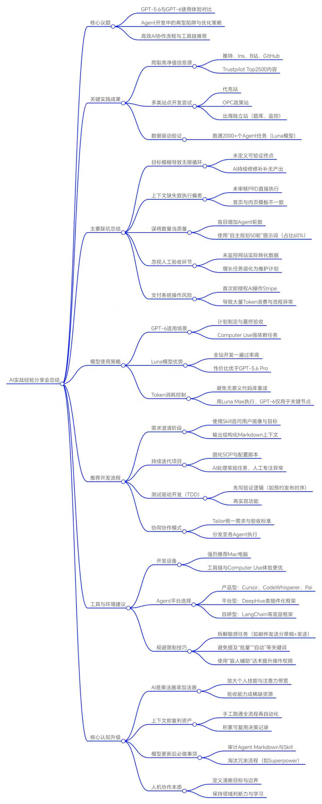

小伟的
Codex 实战课.
从 5.6 到 6，
把一次次试用变成可以交付的工作。
给没有来现场的你：看懂讲了什么，理解为什么，再带走一套可以自己尝试的方法。
先用三分钟认识这节课
这是一场围绕 Codex 实际使用展开的经验分享。小伟从大量使用 GPT-5.6、尝试 Luna 并发开发的经历讲起，复盘网站增长、长任务和支付流程中的问题，再讲 GPT-6 的分工方式、开发工具、上下文积累与 Harness。贯穿整场的主线是：AI 能连续执行，并不意味着任务正在接近完成；人要把目标、材料和验收连起来。
小伟提到自己尝试过代充站、OPC 政策站、题库和监控相关的出海站，也从 X、Instagram、B 站、GitHub 等渠道收集过资料。思维导图还记有 Trustpilot Top 2500 的内容采集。他同时强调，这些尝试的价值更多体现在数据积累和摸清工具边界，实际业务收益并没有与 Token 消耗同步增长。这堂课应该当作一次真实使用复盘来读。
读完后，你应当能够做五件事：给 AI 写出可验证的任务；识别“忙了很久却没交付”的征兆；按任务分配模型；组织澄清、开发与验收流程；把成功经验保存成下次可以继续使用的上下文。
先记住这五条
- 目标写到能判定完成。 “把产品做完整”太宽；“手机上能完成一次预约，并且不会重复提交”可以检查。
- 用成果衡量消耗。 多写计划、多开 Agent、多跑几轮，都要对应明确的新结果。
- 把模型用在合适的环节。 课堂倾向于强模型处理复杂规划和终验，较轻模型执行清楚的小任务。
- 先跑通，再自动化。 成功案例、失败处理、测试与 SOP，是自动化的基础。
- 人的判断持续存在。 可以减少机械操作，但方向、业务价值和关键取舍仍需要人理解。
按自己的时间阅读
| 你有多少时间 | 建议路线 | 读完应带走什么 |
|---|---|---|
| 5 分钟 | 本节 → 六个踩坑 → 课后检查 | 知道下一次任务最该改哪一点 |
| 15 分钟 | 基础概念 → 踩坑 → 开发流程 → 模型分工 | 能组织一次有终点的 AI 协作 |
| 完整学习 | 顺序读完，再做练习和自测 | 把一次性交付延伸到持续复用 |
课堂来源：06:49–10:18、19:40–21:17、46:08–51:33。本文新增的练习、模板和检查清单会单独标注。
基础概念：先知道自己在和什么协作
模型、Agent 和工具不是一回事
模型负责理解、生成和推理。课堂提到的 Sol、Luna、Astra，是材料中的模型名称。Agent把模型放进一个持续做事的过程：看材料、决定下一步、调用工具、读取结果，再决定是否继续。工具提供具体动作，例如读文件、执行命令、操作网页或运行测试。
因此，一次简单问答和“读项目、改代码、跑测试、交付网站”消耗的资源不同。后者会反复处理上下文和工具结果。判断它是否值得，应该看这些动作是否让任务更接近交付。
把课堂术语翻译成日常语言
| 术语 | 在这节课里怎样理解 | 一个例子 |
|---|---|---|
| Token | 模型处理文字等信息时使用的计量单位；不等于工作成果 | 反复读取同一份代码，也会增加消耗 |
| Context 上下文 | AI 当前工作所需的材料与背景 | 现有代码、客户需求、正确页面、已经确认的决策 |
| PRD | 对产品要做什么的说明 | 第一版预约发布给谁用、具备哪些功能 |
| 验收标准 | 判断任务是否完成的具体条件 | 未到预约时间不发布，到时发布一次 |
| Subagent 子 Agent | 被分派去完成一项子任务的执行者 | 分别检查首页和手机导航，最后统一验收 |
| AGENTS.md | 给 Agent 看的稳定工作约定 | 测试命令、项目禁区、代码约定 |
| Skill | 某类工作可复用的操作方法 | 怎样澄清需求、排错和核对交付证据 |
| SOP | 已经整理好的标准操作步骤 | 下载、构建、测试、发布，以及失败如何处理 |
| GSC | Google Search Console，观察搜索表现的工具 | 检查搜索曝光、点击等数据，而不是只看页面是否上线 |
| Harness | 支撑 Agent 实际运行的环境与机制 | 文件、命令、工具连接、状态与执行约束 |
这里的概念解释是为缺席读者补充的阅读辅助。模型名称和具体档位沿用课堂材料；它们与套餐、客户端功能一起变化，本文不把课堂配置当作永久有效的产品说明。
课堂来源：09:21–11:50、22:01–27:45、52:00–56:24；术语细节参考飞书讲稿。Harness 的延伸解释见文末一手资料。
5.6 的使用：高并发带来了什么经验
从用最强配置，转向按任务选择
小伟分享，在自己的 Web 开发场景中，很多明确的小需求不需要一直用最高配置。复杂规划、跨平台检索或难处理的问题，才更需要较强模型介入；普通实现可以尝试较轻配置。
他对 Luna 的评价主要来自全站开发和小需求执行：速度快，输出质量在他的任务里也够用。办公室曾运行两千多个子 Agent。并发规模本身不能证明所有任务都通过验收，也不能直接代表业务收益。
大量使用之后，真正暴露的是协作问题
额度宽裕时，小伟容易给出“继续做”“自主思考 50 轮”这样的指令，然后不再细看中间结果。他在录音中估计，这类表达曾占自己输入的很大比例。结果是，系统很忙，但一些项目停留在研究、计划和审计，没有推进到需要的成果。
这段经历的学习价值在于：投入更多执行量之前，先确定现在缺的到底是能力、材料、决策，还是一个具体的改动。 如果首页与内页使用不同模板，继续增加竞品研究并不会自动修好它们。
关于设备选择
课堂明显偏好 macOS，理由是小伟自己的工具链和 Computer Use 体验。把它理解为主讲人的环境选择经验即可；这堂课的方法并不要求读者先购买某一种设备。先检查现有环境能否完成自己的工作，再决定是否迁移。
课堂来源：09:21–12:43、15:26–17:06。Luna 的降价幅度、成功率和体验比较在各份材料中口径不同，故不整理成量化排行榜。
六个踩坑：为什么 AI 一直忙，却没有结果
01 增长任务变成了维护计划
发生了什么。 小伟原本想让网站获得更多目标客户的搜索流量和有效转化。AI 先研究网站与同行，再写改进计划。但在访问、下单等关键数据没有对清楚时，任务继续变成检查旧计划、写新计划、整理材料。
问题在哪里。 规划阶段结束后，没有接上“做一个改动 → 观察结果”的环节。人的连续指令让工作持续发生，业务问题却没有得到新的证据。
可以怎样做。 每一轮确定一个阶段成果：补齐一项数据、应用一个已批准的改动，或提交一个需要决策的问题。若缺数据，就明确缺口和取得方式。飞书复盘另提到，部分生产发布本来就保留人工审批，不能仅凭“没有上线”判断 AI 犯错；应检查等待期间是否有新增价值。
02 用 Agent 数量代替问题诊断
发生了什么。 结果不好时，小伟常要求再开几十个 Agent、多研究几十轮。但这样的要求没有说明哪里不对，也没有说明新增 Agent 各自负责什么。
问题在哪里。 数量本身无法消除错误方向。多个执行者重复研究同一个方向，会扩大成本；没人负责合并与最终验收，也会留下衔接问题。
可以怎样做。 先指出预期和实际的差异，再拆分独立问题。例如，一个执行者定位首页导航，另一个检查内页与手机菜单，最后有人核对共同实现和完整交互。能独立推进的工作才并行；不要把“多开几个”当作对质量不满意的唯一反馈。
03 把 90 天计划压到 10 天，却没有区分等待
发生了什么。 小伟整理出一套 SEO 工作计划，觉得时间太长，又让 AI 把 90 天的工作压到 10 天。
问题在哪里。 改代码、整理数据、准备合作资料可以集中执行；流量观察、外链审核、合作回信和客户反馈依赖外部时间。提高模型速度或增加并发，不能直接缩短这些等待。
可以怎样做。 把计划拆成“现在能完成的动作”和“必须观察或等待的结果”。等待项写清下一次查看的时点和触发条件，期间推进其他独立工作。反复检查一个没有变化的外部状态，通常不会带来更多成果。
04 没有亲自走一遍支付与交付流程
发生了什么。 小伟第一次接触 Stripe 时，就让 AI 操作支付流程，之后出现大量问题和反复排查。
问题在哪里。 没有亲自走过完整流程，就很难判断 AI 汇报中的“打通”究竟指哪一步。支付连接、产品可售、库存或授权条件、收款成功和最终交付，并不能用一个状态概括。
可以怎样做。 先理解一轮完整业务链路，再按产品分别报告“可做什么、已验证什么、还缺什么”。飞书材料补充了库存、授权、观察期等条件。这里的关键是建立业务验收标准，而不是把所有操作交出去以后只等一句“完成”。
05 只看首页，漏掉了内页和手机导航
发生了什么。 网站早期直接按讨论结果开发，后面再参考其他网站调整，却留下首页与内页两套模板，以及不统一的导航和移动菜单。
问题在哪里。 参考设计没有落到具体渲染入口；检查范围也没有覆盖不同页面和设备。口头说“每页统一”，不等于实现已经统一。
可以怎样做。 要求 AI 找到各页面实际使用的模板或组件，说明修改位置，再分别检查首页、内页、手机菜单和关键按钮。技术检查与视觉检查要一起覆盖。这个案例也提醒我们，AI 的遗漏不能全部归咎于用户表达。
06 PRD 很详细，但长任务没有终点
发生了什么。 AI 写了一份很长的 PRD，小伟没有认真审核，就让它完整实现。任务跑了两三天，仍在不同地方来回调整。
问题在哪里。 “完整实现”“继续完善”缺少可以判定的终点。每完成一处，又发现另一处可以优化，任务会不断扩张。
可以怎样做。 开始之前明确第一版范围、通过条件和停止条件。完成约定项就交付；新发现的优化记录到下一轮，不自动扩展本轮任务。
一次纠偏，可以这样说
下面是根据课堂案例改写的示范，不是录音原句。
现在的问题：首页和内页的导航不一致，手机菜单也没有统一。
先定位这三个位置实际使用的模板或组件，说明差异的原因。
本轮只统一导航，不增加新功能，也不继续扩展竞品研究。
完成后分别检查首页、内页、手机菜单和关键按钮，提供结果。
如缺少会改变方案的关键决定，请列出具体问题；其余范围内继续完成。课堂来源：12:43–19:34、20:51–21:59；飞书讲稿补充了增长任务复盘、发布审批背景和逐产品验收要求。
推荐流程：从模糊想法到可检查的交付
这组工具可以放进同一条工作流程，但不必一次装齐。先理解每个环节解决什么问题，再挑适合当前任务的工具。
先问清楚，再把讨论保存下来
想法还模糊时，先说清功能给谁用、解决什么问题、第一版必须有什么、什么结果算成功。课堂用“内容发布工具”做例子：平台、用户、发布方式和异常处理都要讨论，不能只说“给我做一个平台”。
临时讨论可以使用 grill-me；持续开发则更需要把共同术语和重要决策留下来。grill-with-docs 的作用是把讨论接到项目材料上，例如 CONTEXT.md 和 ADR，让后续参与者理解同一个词的含义以及为什么这样决定。Matt 技能库
工具分工表
| 工具或方法 | 它解决的问题 | 应当留下什么 |
|---|---|---|
| grill-me | 想法模糊、目标没讲清 | 对用户、范围和成功标准的共同理解 |
| grill-with-docs | 每一轮都要重新解释背景 | 项目术语、上下文与重要决策 |
| ask-matt | 记不住 Matt 技能库里该用什么 | 找到当前环节适合的技能 |
| Trellis | 持续项目中的规范、任务与协作 | 可持续使用的任务资料与工作结构 |
| TDD | 代码写了，但行为是否正确不清楚 | 先失败、再通过的行为测试 |
| systematic-debugging | 报错后盲目修改 | 复现、证据、原因假设和验证结果 |
| verification-before-completion | 没有检查就声称完成 | 支撑交付结论的本次证据 |
工具名称与课堂角色以飞书讲稿为准。Trellis 的项目资料和协作结构见项目仓库；排错与交付验证见 Superpowers 技能库。ask-matt 的范围是 Matt 自己的技能体系，不能由名字推断它能调度全部工具。
用“预约发布”理解 TDD
课堂举了三个行为：未到预约时间不能发布；到时间应当发布；同一个任务不能重复发布。TDD 的顺序是先写能发现问题的测试，再实现最少代码使它通过，然后整理代码。这样的反馈会让 AI 更容易判断本轮是否完成。
测试检查的是被定义的行为。按钮是否好点、手机页面是否被遮挡，还需要实际打开页面看。测试通过也不能直接证明产品已经获得客户或收入。
多 Agent 项目，还要有整体验收
先让共享资料明确需求和验收条件，再给不同 Agent 分配能独立执行的工作。各自完成之后，要检查合并后的流程是否能一起运行。前端、后端分别“完成”，并不等于用户可以完成一笔真实业务。
第一次实践可以更小。 选一个功能，澄清需求、确认完成条件、实现并验证。只有当任务确实复杂到需要更多组织机制时，再引入更完整的框架。
课堂来源：22:01–27:45；工具职责与补充解释来自飞书“我比较推荐的开发流程”。
6 的使用：把能力和成本放回具体任务
核心分工：强模型规划，Luna 执行，再回到强模型验收
小伟在课堂上提出的省额度思路是：用 GPT-6 处理计划，让 Luna Max 执行目标清楚的部分，最后再让 GPT-6 检查结果。飞书补充说明，执行阶段可以另开对话，不必让较贵的模型一直作为监督者反复参与。
这个方法成立的前提，是交接足够明确。下一位执行者至少要拿到目标、相关文件、已确认的方案和验收标准。否则省下的单次模型费用，可能被反复解释和返工抵消。
遇到这些任务，课堂会怎样分配
| 当前任务 | 课堂使用思路 | 先确认的条件 |
|---|---|---|
| 文案、样式、明确的小功能 | 尝试 Luna 等较轻配置执行 | 改哪里、改成什么、怎样检查 |
| 复杂规划、跨系统设计、难定位的问题 | 较强模型分析与规划 | 材料是否够，关键取舍是否明确 |
| 多个子任务已经完成 | 较强模型做整体检查 | 是否覆盖共同流程，而非只汇总状态 |
| 需要看界面、操作网页或长任务交互 | 课堂建议试用桌面 App | 实际客户端是否提供所需工具 |
| 终端改仓库、接入脚本 | 课堂保留 CLI 的使用位置 | 当前环境与工作流是否适合 |
按场景回顾课堂思路
先把目标交给较轻模型
课堂偏好用 Luna 执行清楚的小需求。先写明改动范围和验收条件；如果结果不合格，先判断是材料、目标还是能力的问题。
基于本次课堂经验，不是当前模型性能榜单。
降低消耗，先找无效循环
小伟提到，后来减少检索、下调模型与推理档位后，用量下降。可以从三个地方检查：是否反复读同一批无关材料；是否在没有新数据时继续规划；是否所有任务都默认最高推理。
这并不意味着每次都选最便宜的模型。要比较的是同类任务的完成质量、返工次数、用量和总耗时。课堂对 Luna 的好评，以及 Astra 的额度体感，都属于个人任务经验。
网页端、App 和配置建议怎样看
课堂提到 Codex 额度用完后考虑网页 Chat Pro，也提到低或中等推理、跨窗口记忆和实验性压缩。它们需要结合当时账号与版本理解。主讲人明确说，跨窗口记忆相关配置自己还没试过。
可长期保留的是检查方式： 先确认当前版本支持什么、套餐如何计量，再做小任务比较；不要直接复制一份配置，就推断额度或上下文容量一定如此。关于“模型用的人多后必然降智”，课堂没有提供可验证的对照证据，不能当作已确认机制。
任务拆解的经验与边界
34:04–39:25 还讨论了 Computer Use、邮件草稿、网页评论和浏览器操作受阻时的提示方式。主讲人描述过将操作拆成多轮，甚至通过隐藏意图或声称无障碍需求来尝试得到配合。
这些内容属于课堂讲过的使用经历。可复用的方法是：亲自理解流程，把步骤、输入、结果和检查点说明白。隐藏目的、换一个词或虚构身份，不能建立真实授权。 若自动化无法执行，应检查实际权限、工具能力或服务规则，而不是把这种表达当成通用操作方法。这里不把相关经历改写成可直接照做的绕过教程。
课堂来源：34:04–44:56、48:00–50:41。模型档位、套餐和费率是课堂时期的讨论，未在本文验证为当前产品事实。
上下文与自动化：把一次经验留给下一次
上下文的价值，是减少下一轮的不确定性
同一个模型，拿到不同背景，做事条件就不同。用户是谁、系统当前怎样工作、哪些方案已经失败、什么结果曾通过验收，这些都能让它少走弯路。材料多不自动等于上下文好；关键是相关、可靠、能被当前任务用到。
课堂还提到，知识库可以形成“向外输出、向内输入”的循环。输出帮助整理理解，输入补充新材料，再把经过实践的部分写回项目资料。它的价值要体现在下一次协作更顺畅，而不仅是文档数量增加。
三类材料，各放各的位置
| 材料 | 适合保存的内容 | 避免的问题 |
|---|---|---|
| AGENTS.md | 稳定规则、常用命令、项目特有约束 | 每次任务都重复解释同一约定 |
| Skill 与脚本 | 重复流程、触发条件、步骤和检查方式 | 把稳定操作一遍遍口述给 AI |
| CONTEXT.md、决策记录与案例 | 业务背景、共同术语、为什么这样决定 | 换对话或换执行者后丢失共识 |
案例：维护数据库扩展，逐步变成自动更新系统
小伟转述了一位朋友维护约 300 个 PostgreSQL 扩展的经历。扩展更新时，需要找新版本、核对来源、下载源码、调整构建规则、安装依赖、编译打包、进入测试环境，再发布合格结果。不同扩展有不同要求，全部手工处理很费时间。
朋友先积累了成功案例，知道哪些步骤可复用、哪里容易失败、什么才算合格。他把这些经验放进配置、脚本、模板、测试和 SOP，再让 AI 调用工具执行，并用定时任务发现新版本。常规更新逐渐自动完成，人转向改进流程和处理异常。
这里的“约 300 个”是课堂转述的规模，不是本文独立核验的运营数据。真正可学习的是顺序：先知道流程和合格结果长什么样，再把重复执行交给系统。 冒烟测试只能检查一部分关键路径，也不能被当作所有功能都正常的保证。
模型升级后，回看旧规则
课堂认为，旧模型时期为弥补能力而增加的繁复步骤，可能在模型升级后变成负担。检查 AGENTS.md 和 Skill 时，可以问：哪些规则已过期，哪些重复，哪些不解决当前问题，哪些是必须保留的业务约束？
主讲人对 Superpowers 有较强的个人取舍意见。这里可复用的是“审计自己的流程”，而不是升级后统一删除某个框架。保留有用的验证和约束，去掉已经失效或重复的步骤。
课堂来源：28:17–34:03、41:50–46:49；飞书补充了上下文与规则分工。
延伸问答：Harness 到底在说什么
模型是大脑，Harness 提供运行条件
分享后半段，小伟用“大脑、身体与工作环境”的比喻解释 Harness。模型负责推理，Agent 根据结果决定下一步，Harness 则把文件、命令、工具、状态和运行环境连接起来，让这些动作可以实际执行并被管理。
这也解释了为什么同一个模型放到不同产品里，会出现不同的工作体验：能看到什么、能调用什么、如何保留进度、如何检查结果，都会影响连续任务。
普通使用者和平台开发者，关注点不同
课堂大致区分了三种方向：偏成品的 Agent 工具；提供插件、沙箱或工作流的平台；帮助开发者自己搭建的框架。对日常开发者，优先选择能顺利完成工作的现成工具；对搭建 Agent 平台或企业系统的人，运行环境的架构更值得研究。
录音中后两类产品的专有名词识别不稳定，出现 Deep、Deep honey、defi 等写法。思维导图又出现 DeepHive、CodeWhisperer 等条目，无法逐一对应。本文保留课堂的分类思路，不把这些名称配成已确认的工具选型表。对 Pi 等工具的评价同样是主讲人的使用观察。
给缺席读者的补充
长任务如果跨越多轮上下文，需要留下可读的进度记录，并让下一轮能够继续检查和推进。Anthropic 对长时 Agent 的工程文章也讨论了初始化环境、持续记录进展，以及逐项验证功能的作用。这是与课堂主题相关的延伸阅读，不是本次讲课的逐字内容。Effective harnesses for long-running agents
课堂来源：52:00–57:11。工具名称存在转写歧义；概念补充另附一手资料。
课后实践：做一次有终点的协作
以下练习由整理者根据课堂内容设计，用来把理解转成行动。它们不是课堂布置的作业，也不代表会议已形成这些行动承诺。
练习一：把一个模糊要求写到能验收
选一项真实的小任务，填完下面的任务单。先尝试在一次工作中闭合，不必从整个产品重构开始。
任务：我要交付什么具体结果？
使用者：谁在什么场景下使用它？
上下文：现有材料、相关文件、参考案例是什么？
本轮范围：这次做哪些部分？
完成标准：怎样逐项判断通过或不通过？
验证方式：哪些运行检查、页面检查或业务数据能支撑结论？
需要我决定的事：哪些取舍会改变方向或操作范围？
停止条件：什么条件满足后就交付，哪些优化留到下一轮？练习二：给当前长任务做一次“有没有进展”检查
翻看最近一轮输出，把内容分别归到“新材料、具体改动、验证结果、待决策问题”。如果只看到计划数量增加，却说不出新的成果，就返回本课六个踩坑，找出最接近的一类。下一条指令只要求一个可以核对的阶段成果。
练习三：做出你的第一份可复用经验
找一件本周重复做过的工作，手动完成一遍。记录输入、关键步骤、成功标准和常见失败，再让 AI 依据记录执行一个小样本。核对结果后，把有效步骤保存成 SOP、脚本或 Skill。目标是下一次少重新解释，少犯同样的错。
交付前，逐项勾选
勾选仅保存在当前浏览器。已完成 0 / 8 项。
五道自测
01计划改了很多版，增长任务却没进展，下一步先做什么？
核对当前数据与具体缺口，选一个能检查的阶段成果。继续增加计划版本或研究轮数，不能代替实际改动和结果观察。
02“再开 50 个 Agent”为什么不一定改善质量？
它没有指明差异、原因和各自职责。先定位问题，再将能独立推进的工作并行，并保留整体检查。
03预约发布的三个基本验收点是什么？
未到时间不发布；到时间发布；同一任务不重复发布。还需要按实际业务补充异常情况，页面效果另行检查。
04让 Luna 执行之前，强模型需要交接什么？
明确目标、相关材料、已确认方案和验收标准。执行者缺这些信息时，会重新猜测、反复规划，抵消分工带来的好处。
05数据库扩展案例最值得复制的是什么？
先跑通流程，积累成功与失败案例，再固定 SOP、脚本和测试，最后自动执行常规工作。规模数字并不是方法本身。
一段可以保留下来的自我提问
课堂建议在模型更新后，让 AI 基于真实经历充当“人生教练”，识别未来 3–5 年的瓶颈、机会和行动主线。这个练习的价值在于结构化反思；缺少真实背景时，不应把模型生成的确定语气当成对人生的准确判断。
下面保留飞书材料中的主要要求，整理为便于复用的版本：
基于我提供的经历、能力、职业处境、资源与行为模式，
找出当前最关键的 3–5 个瓶颈、风险和机会，按重要性排序。
不要迎合，也不要给泛泛而谈的建议；指出我可能忽略的盲点。
每条建议说明：为什么重要、为什么适合我、具体怎么做、机会成本是什么。
分别给出未来 30 天、90 天和 1 年的行动重点。
如果只能做一个改变，告诉我是什么，并说明依据。
缺少会改变判断的真实信息时，先明确指出信息缺口。自我反思部分来源：46:52–48:00 及飞书人生教练提示词。其他练习、清单与自测为整理者补充。
回听索引与资料来源
实际发言按什么顺序展开
时间戳来自 Word 转写，是录音位置，不是网页播放器。当前材料没有音视频文件，因此这里提供回听定位信息。
| 录音位置 | 讲了什么 | 对应阅读位置 |
|---|---|---|
| 06:49–10:18 | 开场、项目尝试、数据采集、消耗与设备 | 课程概览、5.6 使用 |
| 10:19–12:43 | Sol 与 Luna、两千多个子 Agent、认真看输出 | 5.6 使用 |
| 12:43–19:34 | 增长计划、并发数量、时间压缩、支付与页面问题 | 六个踩坑 |
| 19:40–21:59 | 用产出衡量消耗、PRD 长任务没有终点 | 踩坑与任务单 |
| 22:01–27:45 | 需求澄清、Trellis、TDD、排错与协作 | 推荐流程 |
| 28:17–34:03 | 数据库扩展自动化、SOP 与上下文复利 | 上下文与自动化 |
| 34:04–39:25 | 软件入口、Computer Use、任务拆解与操作尝试 | 6 的使用 |
| 39:27–44:56 | 额度、模型分工、规则审计、未试验配置 | 6 的使用、规则更新 |
| 44:57–50:41 | 协作关系、学习、人生教练、App 与 CLI | 上下文、课后反思 |
| 50:42–58:23 | 业务体验、Harness、工具方向、交流与结束语 | 延伸问答 |
阅读原图时，留意这几处
| 原图或材料中的说法 | 本文怎样处理 |
|---|---|
| Tailor 统一需求与验收 | 飞书对应工具为 Trellis，正文采用 Trellis |
| 跑通 2,000 多个 Agent 任务 | 课堂提到执行规模，不据此断言所有任务验收合格 |
| Luna 性价比优于 GPT-5.6 Pro | 保留主讲人对 Luna 的偏好，不生成统一性价比结论 |
| 自主规划指令占比 60% | 录音是对个人输入的估计；飞书另有子 Agent 用量占比，二者不混算 |
| DeepHive 等平台或产品名称 | 无法与录音逐一确认，保留分类概念并标明名称歧义 |
| 2.5 倍费率、3–5 倍体感消耗、实验性配置 | 作为当时讨论背景，不当作已验证的最新规格或承诺 |
展开课堂原始思维导图 可点击图片查看大图

延伸阅读
下面按读者接下来的问题选择，不必全部安装或逐条阅读。前三项是课堂工具资料，最后一项是整理时补充的工程解释。
- 想把需求问清、把共识存下来：Matt Pocock Skills。
- 想组织持续迭代项目和任务资料：Trellis。
- 想了解测试、系统排错和完成前验证：Superpowers。
- 想理解长任务为什么需要运行环境与进度记录：Anthropic 长时 Agent Harness 文章。
这场分享没有形成明确的团队决议、责任人分工或截止日期。本文的产物是一份课程学习纪要：理解讲过的内容，保留经验的适用条件，再用一个真实任务验证自己的掌握程度。